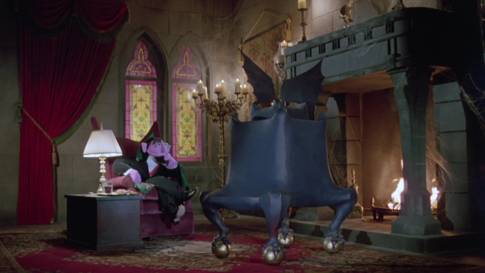

About:
The Count von Count is a mysterious vampire who lives in an old castle near the Sesame street.
Watching his favorite shows: 24 and 60 minutes
In an interview, the Count revealed his castle has:
- 41 rooms
- 27 chandeliers
- 91 doors
- 31 closets
- 126 windows (most of which are broken)
- 14 stairways with a total of 301 stairs
- 32 sofas
- 27 easy chairs
- 72,000 bathroom tiles
- 22 soap dishes
- 7 hair brushes
- one fangbrush
How does he know that? Infortunately, he has arithmomania: a mental disorder which makes him count anything and everything. He sometimes even counts himself!
When he finishes counting, the Count laughs and announces his total, usually accompanied by a crash of thunder and a flash of lightning, even on sunny days, because he has a personal cloud that hovers over his head and provides the thunder and lightning!
Despite being a vampire, he's very sociable and has several friends at Sesame street. However, I don't know if his friends are safe, because I don't know what he eats!
Chatting about the number zero with Oscar
With Rosa, Rosita and Elmo, he helped count children under age 5 in the 2020 census:
The best bachelor in the street:
Sensual seductiox
The Count has many qualities which makes him the best bachelor in the whole Sesame street. First, of course, he's noble, having his own castle and car:
The Count driving his Countmobile
He's also intelligent: he received, in 2013, the Noble Prize for Counting (being the best counter in the world)!

He plays organ too, and this is not easy at all!
And no one can deny he's stylish. He matches his cape with the occasion.
He plays golf too!
detective-style
However, he already has a girlfrend...
Cookie monster, the Countess, the Count and Elmo
Happily, he has a brother!